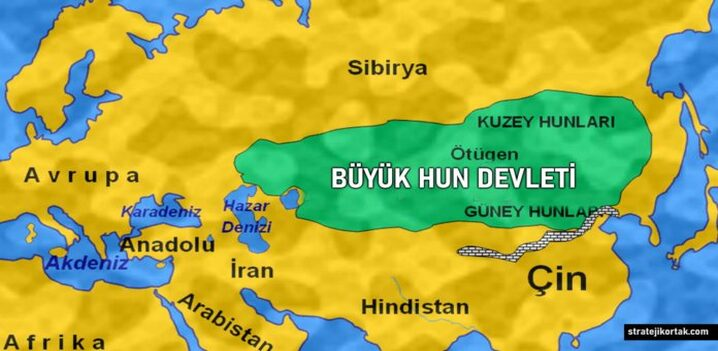

Büyük Hun İmparatorluğu
Yazar:İbrahim ERDEM
02.11.2024

Büyük Hun İmparatorluğu
Büyük Hun İmparatorluğu, M.Ö. 3. yüzyıl ile M.S. 1. yüzyıl arasında varlık göstermiş, Orta Asya kökenli göçebe bir devlettir. Tarihsel kaynaklarda "Hunlar" olarak anılan bu topluluk, tarihin en etkileyici göçebe imparatorluklarından birini kurmuştur. Büyük Hun İmparatorluğu'nun tarihi, sadece askeri başarılarıyla değil, aynı zamanda kültürel etkileriyle de önemlidir.
Kuruluşu ve Yükselişi
Hunların kökeni, Orta Asya'nın geniş bozkırlarına dayanmaktadır. İlk olarak M.Ö. 3. yüzyılda ortaya çıkan Hunlar, önceki Türk topluluklarının bir uzantısı olarak kabul edilir. Bu dönemde, Hunlar, özellikle Çin’in kuzeyinde güçlü bir güç haline gelmeye başladılar. Büyük Hun İmparatorluğu'nun kurucusu olan Teoman, M.Ö. 3. yüzyılda Hun kabilelerini bir araya getirerek merkezi bir otorite oluşturmuştur. Teoman, hem askeri stratejileri hem de siyasi becerileriyle dikkat çekmiştir.
Teoman’ın ölümünden sonra, oğlu Mete Han (Mete Han) imparatorluğun başına geçmiştir. Mete Han, Hun İmparatorluğu'nu büyük bir güç haline getirerek geniş topraklara yayılmasını sağlamıştır. Bu dönemde, Hunlar, Asya'nın geniş bölgelerinde önemli bir askeri varlık olarak ortaya çıkmış, Çin, Pers ve diğer komşu devletlere karşı savaşlar düzenlemişlerdir/p>
Askeri Strateji ve Savaş Taktikleri
Hunların askeri başarıları, onların savaşçı doğasından ve geliştirdikleri askeri taktiklerden kaynaklanmaktadır. Sürekli göçebe yaşam tarzı, onlara hızlı hareket etme yeteneği kazandırmış, bu da düşmanları üzerinde psikolojik bir üstünlük sağlamıştır. Atlı askerler, savaş sırasında önemli bir rol oynamış, düşmanları hızlıca kuşatıp etkisiz hale getirmek için etkili bir şekilde kullanılmıştır.
Hunların en önemli savaş taktiklerinden biri, düşmanı yanıltmak ve ani saldırılar yapmaktı. Ayrıca, düşmanlarına korku salarak savaşmadan teslim olmalarını sağlamak gibi psikolojik bir strateji de geliştirmişlerdir. Bu durum, Hunlar’ın birçok savaşta zafer kazanmasına katkı sağlamıştır.
Kültürel Etkiler
Büyük Hun İmparatorluğu sadece askeri bir güç olmakla kalmamış, aynı zamanda kültürel bir etkileşim de sağlamıştır. Hunların, komşu toplumlarla olan ilişkileri sonucunda, hem kendi kültürlerini zenginleştirmiş hem de diğer kültürlere etki etmişlerdir. Dönemin önemli tarihçilerinden biri olan Strabon, Hunların tarım, hayvancılık ve savaş becerileri konusundaki yeteneklerini övmüştür.
Hunların göçebe yaşam tarzı, onları farklı iklim koşullarına ve coğrafyalara uyum sağlamaya zorlamıştır. Bu durum, onların kültürel zenginliklerini artırmış ve farklı bölgelerdeki kültürel unsurları benimsemelerine yol açmıştır. Ayrıca, Hunların dini inançları, doğaya ve doğaüstü varlıklara yönelik saygıyı içeriyordu. Bu inançlar, zamanla diğer toplumlarla etkileşimde bulunarak gelişmiştir.
Düşüşü ve Mirası
Büyük Hun İmparatorluğu, 1. yüzyılda iç karışıklıklar ve dış baskılar nedeniyle zayıflamaya başlamıştır. Mete Han'dan sonra, imparatorluk çeşitli liderler arasında bölünmüş ve iç savaşlar ile çatışmalar yaşanmıştır. Bunun yanı sıra, Çin’in kuzey sınırlarında sürekli olarak tehdit oluşturan güçler, Hunların topraklarını kaybetmesine neden olmuştur.
Hun İmparatorluğu’nun zayıflaması, Avrupalı göçebe topluluklar üzerinde de etkili olmuştur. Hunların düşüşü, Batı’ya doğru yeni göç hareketlerinin başlamasına neden olmuş, bu da Avrupa’nın siyasi ve kültürel yapısında önemli değişiklikler yaratmıştır. Örneğin, Huni göçleri sonucunda Batı Roma İmparatorluğu da ciddi tehditlerle karşı karşıya kalmıştır.
Büyük Hun İmparatorluğu’nun mirası, yalnızca askeri gücüyle değil, aynı zamanda göçebe yaşam tarzının, kültürel etkileşimin ve siyasi organizasyonun gelişimiyle de ilgilidir. Hunlar, Türk ve diğer göçebe topluluklar üzerinde büyük bir etki bırakarak tarih sahnesinde önemli bir yer edinmişlerdir.
Sonuç
Büyük Hun İmparatorluğu, tarihi boyunca gösterdiği askeri başarılar, kültürel etkileşimleri ve geniş coğrafyalar üzerindeki etkisi ile dikkat çekmektedir. Bu imparatorluk, Asya'nın ve Avrupa'nın tarihi üzerinde kalıcı izler bırakmış, sonraki göçebe toplulukların ve devletlerin oluşumuna ilham kaynağı olmuştur. Hunların mirası, günümüzde bile tarihçiler ve antropologlar için önemli bir araştırma alanı olmaya devam etmektedir.